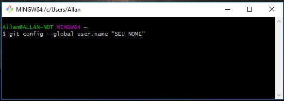
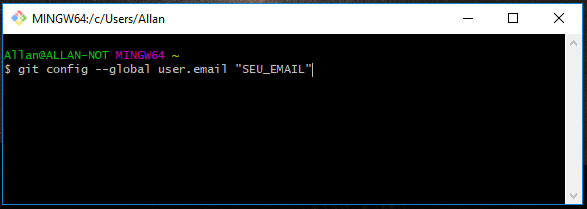
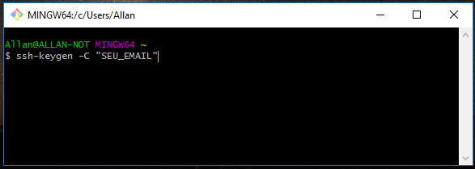
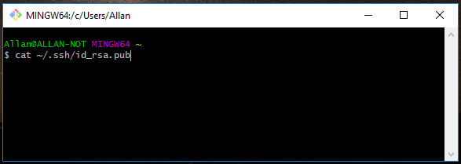
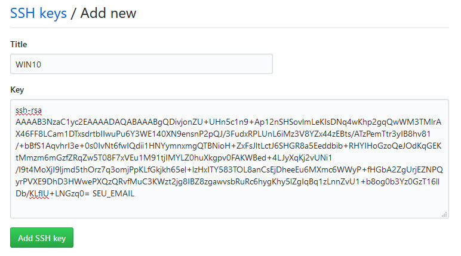
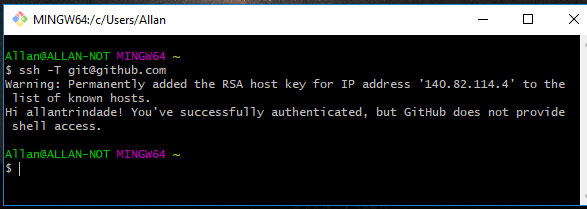

Como Configurar o GIT
Depois de ter criado sua conta no GITHUB e instalado o GIT em sua máquina, vamos configurar o GIT para rodar no Windows, seguindo os passos à seguir:
- Abra o GIT Bash, em seguida, utilize o seguinte comando para informar seu nome ao GIT. 
- Na sequência, utilize o seguinte comando para informar seu email ao GIT. 
- Para gerar a chave SSH, utilize o seguinte comando, substituíndo seu email e apertando sempre enter. 
- Para vê sua chave criada, use o seguinte comando: 
- Copie sua chave gerada, acesse sua conta do GIT, em seguida selecione a opção settings em seu menu.
Depois vá até a opção SSH and GPG keys > New SSH key
Dê um nome e cole sua chave salvando em Add SSH key

- Utilize o seguinte comando para testar sua chave. 